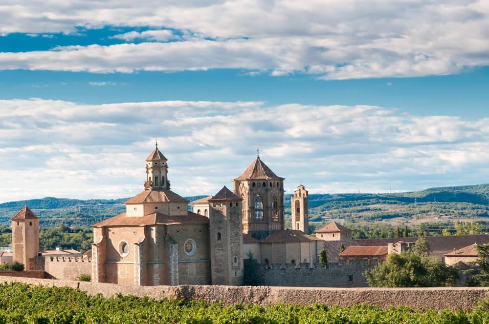

A Map To Spainish History
伊比利亚半岛从80万年前就有人居住。据推测可能是非洲人在追捕猎物时穿越直布罗陀海峡或来自欧洲其他地区的猎人越过比利牛斯山来到这里并定居下来。伊比利亚半岛最早的土著居民是伊比利亚人。西班牙北部的阿尔达米拉洞穴留下的举世闻名的岩画生动地记载了原始人生活情况，野牛、鹿、野马等颜色鲜艳、栩栩如生。从大约公元前3000年开始，外来民族开始向伊比利亚半岛大规模移民。公元前六世纪凯尔特人来到了伊比利亚半岛，伊比利亚人和凯尔特人相互通婚、融合，产生了后来的塞尔梯贝里亚人。大约公元前十一世纪，腓尼基人与西班牙建立了贸易关系。腓尼基人创建了加的斯城；为进一步开发半岛资源，腓尼基人在地中海沿岸建立了永久居留地。腓尼基人生性平和，在伊比利亚半岛从事经商活动，他们教当地居民使用货币、采矿冶炼金属、织布等。前元前七世纪，希腊商人开始在西班牙地中海沿岸定居下来，将葡萄和橄榄引入伊比利亚半岛。公元前6世纪腓尼基人联合卡塔戈人抗击塞尔梯贝里亚人，后来卡塔戈人成为半岛的主人。
公元前218年，罗马人大举入侵西班牙。公元前206年罗马人将卡塔戈人逐出伊比利亚半岛。罗马人在征服塞尔梯贝里亚人的过程中遭到英勇抵抗，公元前19年罗马人才彻底征服整个半岛。此后，在长达500年的时间里西班牙成为罗马帝国的一个省。罗马人的统治对西班牙历史、经济、文化、社会产生了深远的影响。罗马人与当地塞尔梯贝里亚人通婚，从而诞生了罗马西班牙人。罗马人带来了语言、法律、习俗等，西班牙彻底被“拉丁化”。罗马人建立了许多新的城镇（如塞维利亚、科尔多瓦、萨拉曼卡、托莱多、萨拉戈萨等），修建了大量的道路、下水道、公共浴室、市政大厅、斗兽场、圆形剧场、桥梁、引水渠等。在罗马人的统治下，当地人的生活水平明显提高，伊比利亚半岛成为重要的贸易地区，贵重的矿物、廉价的葡萄酒、优质的橄榄油销售到世界各地。总的来讲，罗马统治给西班牙带来四个社会基础：拉丁语言、罗马法律、市镇体制和基督教信仰。
公元5世纪罗马帝国开始走向崩溃。公元409年西哥特人入侵西班牙，从而开始了长达300年的统治。在西哥特人统治下，罗马西班牙人与西哥特人互相通婚。西哥特人在西班牙拉开了封建主义的序幕。但是，西哥特人并没有给西班牙文明注入太多新鲜血液。相反，西哥特人也采用了拉丁文字，甚至成为基督教徒，沿袭了罗马人的文化习俗，后来被当地人同化了。
一个关于西班牙的冷知识：它曾有8个世纪的时间处于穆斯林统治之下。
由于争夺王位，公元710年西哥特人的一位王位竞争者寻求摩尔人的帮助，从而开始了摩尔人的入侵。公元711年阿拉伯人（又称摩尔人）入侵西班牙。阿拉伯人只用了7年时间就征服了伊比利亚半岛，从而西班牙开始了为期近800年的伊斯兰统治。开始，西班牙有几个酋长国并存，隶属于大马士革哈里发帝国。公元756年第一位摩尔国王阿夫德拉曼一世，定都科尔多瓦，同时宣布独立。阿夫德拉曼三世时期，科尔多瓦成为西方最繁华的城市、欧洲最大的城市及工业、科学、文化中心。公元10世纪，摩尔人统治达到鼎盛时期。后来，科尔多瓦哈里发帝国分裂为若干个王国。面对阿拉伯人对西班牙的侵略和占领，基督教人开始进行反抗。公元722年，在阿斯图里亚斯地区的科瓦东加山打响了光复运动的第一役。在这场战斗中，基督教军队在领袖佩拉约的领导下战胜了阿拉伯军队。在此后的750年中基督教军队浴血奋战，连连取胜。欧洲其它国家的基督教徒也纷纷响应教皇的号召，到西班牙参加反阿圣战。在同阿拉伯人征战的同时，基督教各个小诸侯国经过相互吞并，形成了卡斯蒂利亚和阿拉贡两大王国。1085年基督教军队收复了托莱多，卡斯蒂利亚将该城定为首都。1212年在阿方索八世的领导下，卡斯蒂利亚王国的军队在拉斯纳瓦斯德托洛萨取得了战胜摩尔人的决定性胜利；此后，又收复了科尔多瓦、塞维利亚、赫雷斯、加的斯等城市，最后只剩下格拉纳达王国。
1492年1月2日，摩尔人首都格拉纳达陷落，西班牙光复运动宣告完成，西班牙最终实现统一。